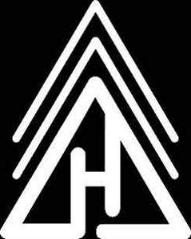
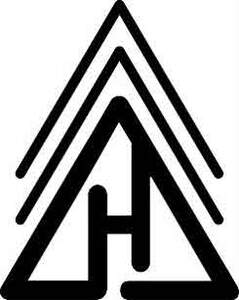

Trade Mark Journal No.2025/036 5 September 2025
UK00004252791 21 August 2025 (25,35)
Mark 1

Mark 2

- Class 25
- Clothing; footwear; headgear; ready-to-wear clothing; ready-made clothing; knitwear [clothing]; men's clothing; women’s clothing; infant clothing; clothing for babies; woolen clothing; leather clothing; denims [clothing]; casual clothing; clothing for leisure wear; woven clothing; sports clothing; polo shirts; polo sweaters; shirts; collared shirts; shirts for suits; t-shirts; hoodies; hooded sweatshirts; hooded pullovers; belts for clothing; waist belts; tuxedo belts; fabric belts; belts of textile; gloves as clothing; fingerless gloves; knitted gloves; winter gloves; driving gloves; mitts [clothing]; headwear; hats; beanie hats; bobble hats; cloche hats; fascinator hats; woolly hats; fashion hats; sun hats; party hats [clothing]; beach hats; headbands; caps [headwear]; skull caps; baseball hats; baseball caps; peaked caps; knitted caps; scarves; neck scarves; snoods [scarves]; shoulder scarves; head scarves; neck tube scarves; socks and stockings; slipper socks; anklets [socks]; woollen socks; bed socks; yoga socks; underwear; lingerie; trousers; dress trousers; leggings [trousers]; jeans; bottoms [clothing]; shorts [clothing]; suits; dress suits; parts of clothing, footwear and headgear; parts and fittings for all of the aforementioned.
- Class 35
- Retail and / or wholesale services in respect of the following goods: Cuff links, cuff links and tie clips, cuff links made of porcelain, cuff links of precious metal, decorative cuff link covers, cuff links coated with precious metals, jewelry, imitation jewelry, watches, tie pins, jewelry charms, key rings, key chains and charms, bags, tote bags, duffel bags, duffle bags, carry-all bags, drawstring bags, cross-body bags, carry-on bags, sling bags, toiletry bags, shoulder bags, bucket bags, belt bags and hip bags, luggage bags, clutch bags, kit bags, carrying bags, belt bags, messenger bags, cloth bags, leather bags, canvas bags, waterproof bags, make-up bags, attaché bags, hand bags, bum bags, gym bags, overnight bags, leather bags and wallets, book bags, roll bags, suit bags, wheeled bags, barrel bags, travel bags, waist bags, cosmetic bags, wallets, pocket wallets, card wallets, wallets with card compartments, key wallets, wrist-mounted wallets, business card holders in the nature of wallets, purses, purse frames [handbags], evening purses, boot bags, luggage, business card cases, umbrellas, clothing, footwear, headgear, ready-to-wear clothing, ready-made clothing, knitwear [clothing], men's clothing, women’s clothing, infant clothing, clothing for babies, woolen clothing, leather clothing, denims [clothing], casual clothing, clothing for leisure wear, woven clothing, sports clothing, polo shirts, polo sweaters, shirts, collared shirts, shirts for suits, t-shirts, hoodies, hooded sweatshirts, hooded pullovers, belts for clothing, waist belts, tuxedo belts, fabric belts, belts of textile, gloves as clothing, fingerless gloves, knitted gloves, winter gloves, driving gloves, mitts [clothing], headwear, hats, beanie hats, bobble hats, cloche hats, fascinator hats, woolly hats, fashion hats, sun hats, party hats [clothing], beach hats, headbands, caps [headwear], skull caps, baseball hats, baseball caps, peaked caps, knitted caps, scarves, neck scarves, snoods [scarves], shoulder scarves, head scarves, neck tube scarves, socks and stockings, slipper socks, anklets [socks], woollen socks, bed socks, yoga socks, underwear, lingerie, trousers, dress trousers, leggings [trousers], jeans, bottoms [clothing], shorts [clothing], suits, dress suits, parts of clothing, footwear and headgear, Strap buckles, belt buckles, belt clasps, shoe buckles, belt buckles [for clothing], belt buckles not of precious metal, buckles for bags, belt buckles [clothing accessories], buckles for clothing.
Daniel Brooks
Representative: Greaves Brewster LLP